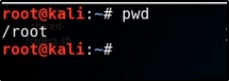

1. pwd : print working directory

2. cd : change directory

3. ls : list out

cd : change dir in forwaord direction
cd root/

nevagting to folder with change dir
cd /etc/
or
ls /etc/

make directory and remove directory

to see hidden file

to locate files

to update database